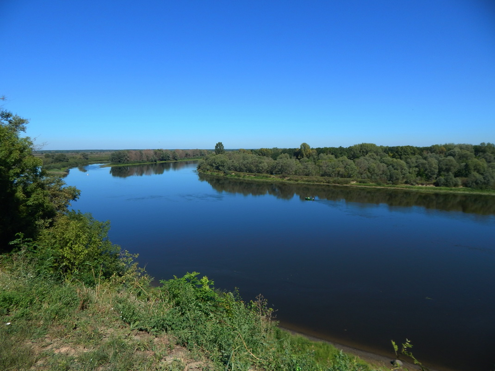
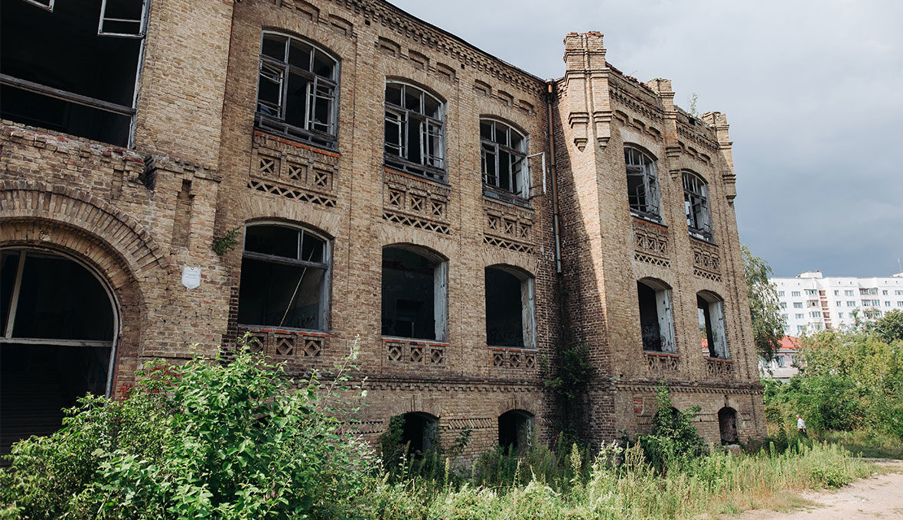

история города
Мозырь — холмистый, со сложным необычным рельефом город на юго-востоке Беларуси. Расположен в Гомельской области на правом берегу живописной Припяти. Это старейший населенный пункт со своим замком, крупнейшим речным портом, самым длинным в стране автомобильным мостом, горнолыжным курортом и другими уникальными туристическими достопримечательностями. Население Мозыря составляет порядка 112 000 человек.
Мозырь впервые упоминается в Ипатьевской летописи в 1155 году. В это время князь киевский Юрий Долгорукий подарил город черниговскому князю Святославу Ольговичу. В ХІІ в. Мозырь находился в составе Туровского княжества, которое подчинялось Киеву, а с XIV в. его земли являлись частью Великого княжества Литовского. В 1569 году Мозырь вошел в состав Речи Посполитой.
В 1577 году город получает право на самоуправление и обретает собственный герб. В XVI и XVII веках в Мозыре накаляются противостояния православных, католиков и униатов, часто происходят феодальные войны.
После II раздела Речи Посполитой город переходит в состав Российской империи и становится центром Мозырского уезда Минской губернии. Здесь размещается важный штаб речной флотилии с боевыми катерами особого назначения, которые контролировали бассейн Припяти и блокировали германские войска.
Экономика города развивалась крайне медленно. Город был отдален от важных торговых путей и не мог похвастаться природными ресурсами. Все изменило строительство железной дороги и мелиоративные работы. К началу XX века Мозырь стал центром торговли лесом, появились предприятия и заводы. В 1917 году в городе устанавливается советская власть. В 1932 году Мозырь становится центром Полесской области, а с августа 1941 года город оккупируют немцы — освобождение пришло лишь в январе 1944 г.
В настоящее время в Мозыре развиваются отрасли по нефтепереработке, машиностроению, деревообработке и пищевой промышленности. На нефтеперерабатывающем заводе производится бензин, дизельное топливо, парафин, мазут, сера. Важнейшим производством является добыча каменной соли на базе Мозырьского месторождения.
Ансамбль городище на замковой горе
Расположен по адресу: Гора Коммунаров, 8, на мысе правого коренного берега р.Припять, между 2 оврагами. Площадка ромбовидной формы, размерами 12–140 Х 100 м, высотой 15–20 м. Впервые исследована в 1951 году Ю. В. Кухаренко, который выявил культурный пласт от 0,6–0,8 м в центре до 2–2,2 м вдоль западного края площадки.
Датируется XII – XIII веками, но существуют версии и о более раннем происхождении городища. Первая Замковая гора была расположена почти на том же месте, где и сейчас –между площадями Ленина и Горького, на правом берегу реки Припяти. Размеры городища были примерно 130 на 80 метров. Древние жители укрепили его 4-хметровым валом и 3-хметровым рвом. По прошествии двух веков городище перенесли уже на саму гору с нынешним названием гора Коммунаров (прежде – Замковая и Спасская). Возможно, это случилось по причине роста населения, или самим жителям такая возвышенность показалась более безопасной.
С тех пор городище много раз перестраивалось, восстанавливалось, но после пожара в XVII веке больше не возводилось, полностью утратив свое оборонное значение. В этот период на Горе Коммунаров была возведена Спасская церковь (действовавшая до XIX века), остатки которой были обнаружены в 2004 году. В середине XIX века Гора Коммунаров плотно застраивается деревянными и каменными жилыми и хозяйственными домами. Ее фрагменты были обнаружены в 2004 году.
В нынешнем виде городище было реконструировано в 2005 году к 850-летию Мозыря – как и много лет назад, укрепление сделали деревянным. Возведенный деревянный замок является уменьшенной копией древней постройки, но архитекторы старались использовать близкие по фактурам и качествам материалы, а также чертежи и рисунки городища.
Сейчас на территории этого маленького деревянного шедевра зодчества расположен Мозырский объединенный краеведческий музей. Городище – одно из самых атмосферных мест в Беларуси для проведения тематических рыцарских и фольклорных праздников и конкурсов. Нередко здесь проходят и выставки-продажи местных ремесленников. Для детей устроен маленький игровой средневековый городок в средневековом стиле с башнями, лестницами, арками из дерева, населенный сказочными персонажами.
Памятник внесен в Государственный список историко-культурных ценностей Республики Беларусь.

Республиканский ландшафтный заказник «Мозырские овраги»
Республиканский ландшафтный заказник «Мозырские овраги», созданный в 1986 году, знаменит прежде всего своим уникальным рельефом. Он представляет собой систему возвышенностей с крутыми склонами, покрытыми густой растительностью.
Северную сторону предпочитают смешанные сосново-березовые сообщества, а южную — дубово-грабовые. Вдоль речек встречается черная ольха. В общей сложности на территории Мозырских оврагов произрастает 496 видов высших сосудистых растений. Некоторые из них (например, ветреница лесная) занесены в Красную книгу Беларуси.
Уникальность данного заказника заключается еще и в том, что он почти полностью находится в черте Мозыря, по дну некоторых оврагов проходят улицы, что придает участку городской застройки особую живописность.
Кафедральный собор святого Архангела Михаила
Кафедральный собор святого Архангела Михаила знавал за годы своей истории разные времена, и сейчас жители Мозыря могут только гордиться таким памятником. Ведь это не только памятник архитектуры, но и памятник веры и мужества.
Началась история этого величественного сооружения в 1645 году, когда часть холма – напротив Мозырского замка – была подарена монахам-бернардинцам. Этот щедрый подарок сделал Стефан Лозко, отставной полковник, который к тому же поучаствовал в строительстве небольшого деревянного монастыря. Правда, монастырь простоял всего три года, а потом был уничтожен во время казацко-крестьянской войны. Тогда же и сам Мозырь разрушили практически до основания. Только в 1678 году город начал потихоньку восстанавливаться.
В эти тяжелые для Мозыря времена огромную роль в возрождении города сыграл самый могущественный и знатный род на этой территории – Аскерки. Представители этой фамилии были хорошо известны на землях Мозырьского Полесья, занимали высокие должности и были владельцами огромных поместий. Именно благодаря им и был отстроен монастырь бернардинцев, а также возведен величественный каменный собор. Сколько лет ушло на его строительство – не известно, но освящен храм был примерно в 60-х или 70-х годах XVIII века.
Весь комплекс демонстрировал черты стиля позднего барокко. Двухбашенная трехнефная базилика стала не только домом для монахов, здесь также были начальная школа и библиотека. А в крипте собора находилась семейная усыпальница Аскерок, где находили последний приют члены этой славной семьи.
В XIX веке монастырь бернардинцев в Мозыре закрыли. Присоединение к Российской империи, а также национальные восстания привели к тому, что католические храмы и монастыри повсеместно прекращали свое существование. В корпусах монастыря разместили присутственные места Мозырьского уезда и больницу. Собор несколько раз горел и начал разрушаться. В 1864 году он стал православным храмом – церковью святого Архистратига Божия Михаила. В правом приделе был освящен престол во имя святителя Кирилла Туровского, а в неосвященном левом расположились ризница, библиотека и архив.
После революции 1917 года начались самые страшные времена для собора – его превратили в тюрьму НКВД Полесской области. Существуют сведения, что в этой тюрьме были приговорены к смерти более 2 тысяч человек. Очень часто эти приговоры приводили в исполнение прямо в подвале собора.
В годы Великой Отечественной войны церковь вновь открыли. Она была действующей все военное время. После войны ее хотели закрыть, но в 1951 году при соборе зарегистрировали небольшую православную общину. Собор является действующим храмом до сих пор.

Костел Святого Михаила Архангела и бывший монастырь цистерцианок
На территории современной Беларуси цистерцианских монастырей было всего три, два из них (мужской и женский) находилось в Мозыре. Построены они были в урочище Кимбаровка. Просуществовал женский монастырь цистерцианок до 1883 года, а 5 лет спустя его здания были переданы православной конфессии.
Комплекс бывшего монастыря цистерцианок (костел и хозяйственные постройки) является памятником архитектуры позднего барокко. Первый деревянный костел на его территории был сооружен в 1610 году по указу короля Жигимонта II Августа. При монастыре существовала школа для девочек, где преподавали арифметику, музыку, гигиену, французский и латинский языки. Каменный храм возведен в 1743–1745 гг.
В 1893–1894 гг. костел реконструировали, пристроив звонницу, боковые каменные галереи. Монастырь в разное время использовался как военная казарма, детский дом. В костеле до 1990-х гг. было музыкальное училище, затем он был возвращен верующим и реставрирован.